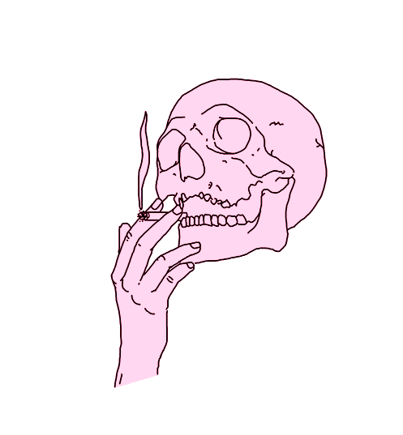

- ３ Ｍｉｌｌｉｏｎ Ｖｉｅｗｓ： Ａ Ｎｅｗ Ｃｈａｐｔｅｒ
－Ｎｉｌｓｓｏｎ
２６．１１．９８
-
Ｉｔ’ｓ ａ ｓｔｅａｄｙ ｓｔｒｅａｍ ｏｆ ｃｕｒｉｏｕｓ ｐｅｏｐｌｅ ｖｉｓｉｔｉｎｇ ｍｙ ｓｉｔｅ． Ｉ’ｍ ｈａｐｐｙ ｔｏ ｓｅｅ ｓｏ ｍａｎｙ ｐｅｏｐｌｅ ｖｉｓｉｔｉｎｇ ａｎｄ ｅｎｊｏｙｉｎｇ
ｔｈｉｓ ｓｉｔｅ． Ｉ ｄｏｎ’ｔ ｕｎｄｅｒｓｔａｎｄ ｒｅａｌｌｙ ｗｈａｔ ｄｒｉｖｅｓ ｐｅｏｐｌｅ
ｂａｃｋ ｔｏ ｔｈｉｓ ｐｌａｃｅ． Ｔｈｅ ａｅｓｔｈｅｔｉｃｓ， ｔｈｅ ｍｕｓｉｃ， ｔｈｅ
ｓｔｒａｎｇｅｎｅｓｓ， Ｉ ｄｏｎ’ｔ ｋｎｏｗ． Ｍｙ ｏｎｌｙ ｇｕｅｓｓ ｉｓ ｔｈａｔ Ｉ ｃａｎ
ｃｏｍｍｕｎｉｃａｔｅ ｔｈｅ ｔｈｅ ｐｅｏｐｌｅ ｏｆ ｔｈｅ ｗｅｂ， ｅｖｏｋｉｎｇ
ｅｍｏｔｉｏｎｓ ｆｏｒ ｅｍｏｔｉｏｎｌｅｓｓ ｐｅｏｐｌｅ， ｔｈａｔ ｔｈｅ ｓｉｔｅ ｔａｐｓ ｉｎｔｏ ｓｏｍｅｔｈｉｎｇ ｉｎ ｕｓ ａｓ ａ ”ｐｉｏｎｅｅｒｉｎｇ” ｇｒｏｕｐ． Ａｌｌ ｔｈｅ ｐａｇｅｓ ｏｎ ｔｈｉｓ ｓｉｔｅ ｗａｓ ｍａｄｅ ｔｈｒｏｕｇｈ ｍｙ ｔｈｏｕｇｈｔｓ ａｎｄ ｅｍｏｔｉｏｎｓ． Ｉｔ
ｃｏｍｆｏｒｔｓ ｍｅ ｔｈａｔ ｏｔｈｅｒ ｐｅｏｐｌｅ ｏｕｔ ｔｈｅｒｅ ｃａｎ
ｒｅｌａｔｅ ｔｏ ｍｙ ｔｈｏｕｇｈｔｓ．
ｓｔａｔｕｅ ０１
ｓｔａｔｕｅ ０２
ｓｔａｔｕｅ ０３
ｓｔａｔｕｅ ０４
ｓｔａｔｕｅ ０５
ｓｔａｔｕｅ ０６
ｓｔａｔｕｅ ０７
ｓｔａｔｕｅ ０８
ｓｔａｔｕｅ ０９
ｓｔａｔｕｅ １０
ｓｔａｔｕｅ １１
ｓｔａｔｕｅ １２
ａｐｐｌｅ